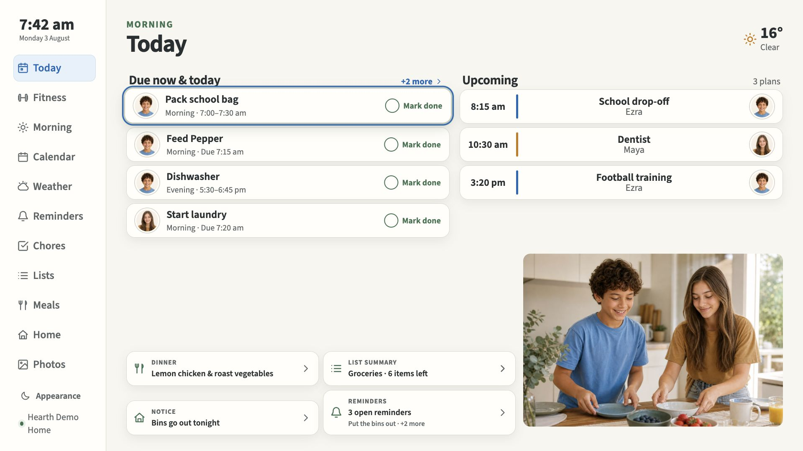
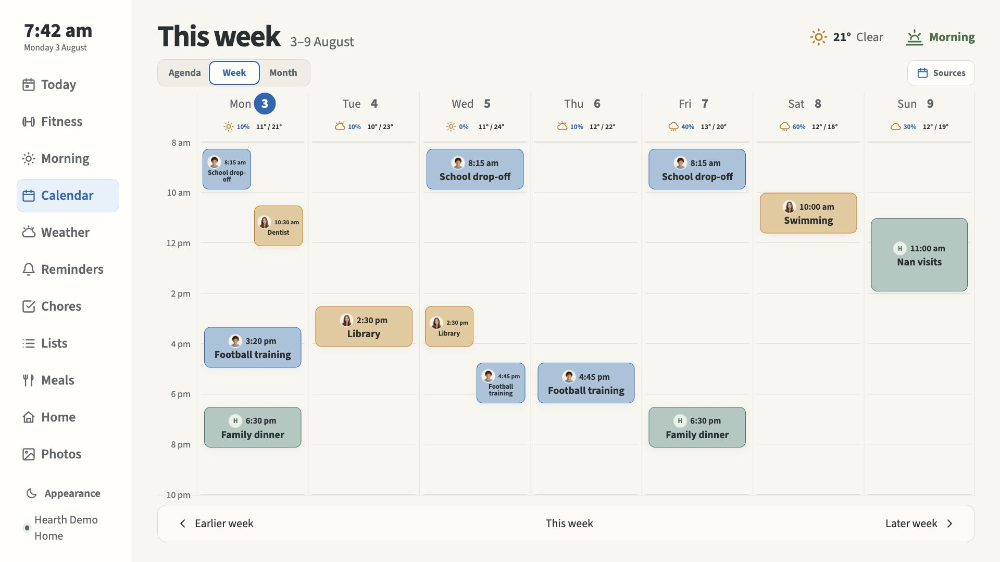
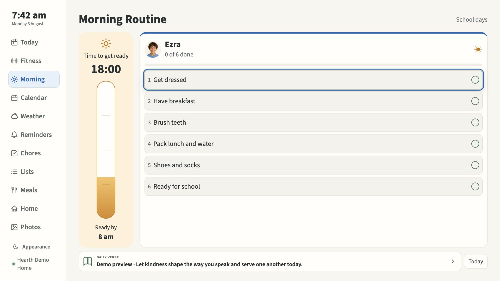
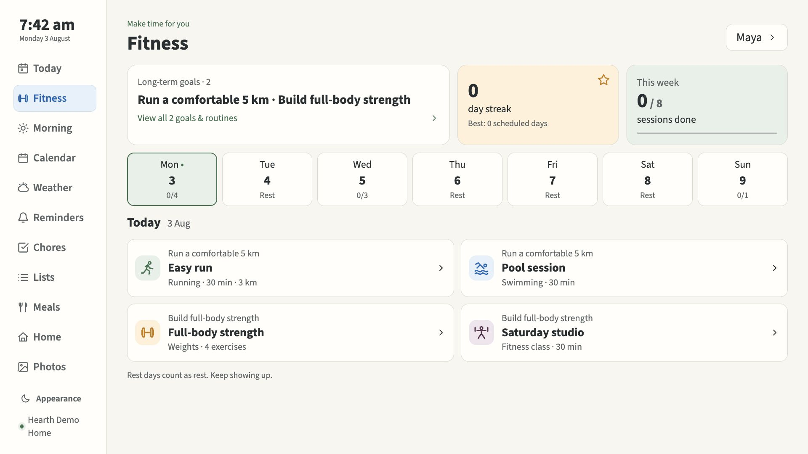

Your family’s day, together.
A calm family dashboard for your TV. Plans, chores, routines and photos, managed from your phone.




Real Hearth screens with fictional demo data.
Make room for your family.
The day, in one place
See what’s coming up, tick off chores, plan dinner and enjoy your family photos. Made for the TV remote as well as touch.
Routines that fit real life
Give school days and weekends their own checklists. Make time for fitness goals, weekly workouts and personal progress.
Your home, your choices
Turn modules on or off without losing their data. Adults manage settings from a phone or iPad; shared screens stay separate.
Start with a private home server.
-
Install Hearth
Use the guided installer on an x86-64 Linux server with Docker Compose, Python 3 and a trusted private HTTPS address.
-
Connect your phone
Scan the installer’s private setup QR to connect the first owner phone. Add other adult phones with an approved QR or code.
-
Add your screen
Connect a browser display or the Android TV app, then approve it from your phone.
Home Assistant is optional. Add it later for home controls, indoor sensors and automations.
Read the installation guide